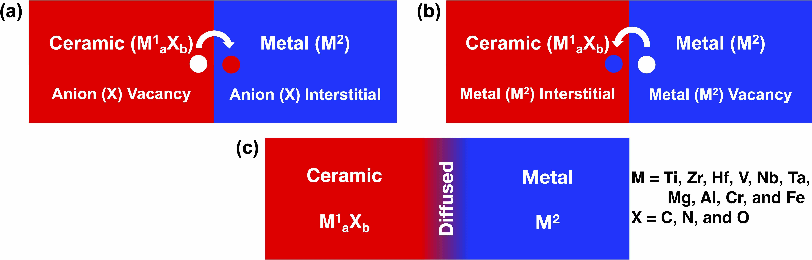

Predicting formation of chemically graded metal/ceramic interfaces
Prince Gollapalli, PSVRA Kishor, and Satyesh Kumar YadavComputational Materials Science | Volume 224 | May 2023, 112155 | Link

Abstract
A gradual variation in chemical composition at an atomic level in a metal/ceramic interface would result in a gradual variation in structural features that can give rise to unusual properties of the heterostructure. One of the ways such atomic-level chemical gradation can be achieved is by diffusion of anions from ceramic to metal. This process is perceived to be unfavorable because it requires the creation of anion vacancies in ceramic and anion interstitials in metal. We use the sum of C, N, or O vacancy formation energy in ceramics and their interstitial formation energy in metals to assess the possibility of migration of anions across the metal/ceramic interface, leading to an atomically chemically graded interface. We use the first-principles density functional theory to calculate the driving force for a few scientifically and technologically important metal/ceramic systems: a combination of 10 metals (M=Ti, Zr, Hf, V, Nb, Ta, Mg, Al, Cr, and Fe) and corresponding 30 ceramics MaXb(X=C, N, and O). The metal/ceramic systems that favor chemical gradation have metals from group IVB and VB mainly due to the large negative interstitial formation energies.Bibtex
@article{GOLLAPALLI2023CompMatSci,title = {Predicting formation of chemically graded metal/ceramic interfaces},
journal = {Computational Materials Science},
volume = {224},
pages = {112155},
year = {2023},
issn = {0927-0256},
doi = {https://doi.org/10.1016/j.commatsci.2023.112155},
url = {https://www.sciencedirect.com/science/article/pii/S0927025623001490},
author = {Prince Gollapalli and P.S.V.R.A. Kishor and Satyesh Kumar Yadav},
keywords = {Metal–ceramic interface, Density functional theory, Defect formation energy}
}
Atomically Chemically Graded Ti/TiN Interface
Prince Gollapalli, J Varalakshmi, PSVRA Kishor, Prajeet Oza, and Satyesh Kumar YadavApplied Surface Science | Volume 597 | September 2022, 153637 | Link

Abstract
Interface by definition is two-dimensional (2-D) as it separates 2 phases with an abrupt change in structure and chemistry across the interface. The interface between a metal and its nitride is expected to be atomically sharp, as chemical gradation would require the creation of N vacancies in nitrides and N interstitials in metal. Contrary to this belief, using first-principles density functional theory (DFT), we establish that the chemically graded Ti/TiN interface is thermodynamically preferred over the sharp interface. DFT calculated N vacancy formation energy in TiN is 2.4 eV, and N interstitial in Ti is −3.8 eV. Thus, diffusion of N from TiN to Ti by the formation of N vacancy in TiN and N interstitial in Ti would reduce the internal energy of the Ti–TiN heterostructure. Diffusion of N is thermodynamically favorable till ~23% of N has diffused from TiN to Ti, resulting in an atomically chemically graded interface, which we refer to as a 3-D interface. We show gradual variation in lattice parameters and mechanical properties across the Ti/TiN interface. This opens a new way to control properties of metal/ceramic heterostructures, in line with the already established advantage of gradation at interfaces in micrometer length scale.Bibtex
@article{GOLLAPALLI2022AppSurSci,title = {Atomically chemically graded Ti/TiN interface},
journal = {Applied Surface Science},
volume = {597},
pages = {153637},
year = {2022},
issn = {0169-4332},
doi = {https://doi.org/10.1016/j.apsusc.2022.153637},
url = {https://www.sciencedirect.com/science/article/pii/S0169433222011874},
author = {Prince Gollapalli and J. Varalakshmi and P.S.V.R.A. Kishor and Prajeet Oza and Satyesh Kumar Yadav},
keywords = {Metal/ceramic interface, Mechanical properties, Density functional theory}
}
Annealing-induced changes in optoelectronic properties of sputtered copper oxide films
Aarju Mathew Koshy, A. Sudha, Prince Gollapalli, Satyesh Kumar Yadav, and Parasuraman SwaminathanJournal of Materials Science: Materials in Electronics | Volume 33 | May 2022, 13539 | Link

Abstract
Copper (I) oxide thin films are deposited on quartz substrates by DC magnetron reactive sputtering. This study examines the effect of post-annealing on their optoelectronic properties in detail. The films are grown by sputtering from copper in an atmosphere of argon and oxygen. The substrate temperature is held at 200 °C, while annealing in ambient atmosphere has been carried out between 100 and 600 °C. X-ray diffraction analysis, Raman and UV–Vis spectroscopy, and four-probe measurements were used to characterise the films. XRD indicates that deposited Cu2O has a preferred orientation of (110). Post-annealing did not show any measurable conversion to copper (II) oxide until about 500 °C, and the process was incomplete even at 600 °C. The highest conductivity is observed in the sample post-annealed at 100 °C. These results are of substantial technological importance for using Cu2O for a variety of applications, including transparent solar cell fabrication.Bibtex
@article{Koshy2022JMS,author = {Koshy, Aarju Mathew and Sudha, A. and Gollapalli, Prince and Yadav, Satyesh Kumar and Swaminathan, Parasuraman},
journal = {Journal of Materials Science: Materials in Electronics},
number = {17},
pages = {13539--13546},
title = {Annealing-induced changes in optoelectronic properties of sputtered copper oxide films},
url = {https://doi.org/10.1007/s10854-022-08288-5},
volume = {33},
year = {2022}
}
A Computational study on boron dipyromethene ancillary acceptor-based dyes for dye-sensitized solar cells
Ganapathi Rao Kandregula, Sudip Mandal, Gollapalli Prince, Satyesh Kumar Yadav, and Kothandaraman RamanujamNew Journal of Chemistry | Volume 44 | Feb 2020, 4877 | Link

Abstract
A series of (D-π)2–An–A based organic dyes containing a boron dipyrromethene (BODIPY) moiety as an ancillary acceptor (An) derivative were chosen, and the effect of donor moieties (diarylamine, carbazole, azepine, and dibenzazepine) was investigated to understand their photophysical and photoelectrochemical properties by employing density functional theory (DFT) and time-dependent DFT. It is experimentally proved that BODIPY enhances light-harvesting in the red and near IR regions of visible light. Electron density distribution analysis was performed for all the dyes to confirm the intramolecular charge transfer, envisioned from the simulated absorption spectra of the dyes. Carbazole donor-based dyes exhibited the lowest reorganization energy. A dye attached to the TiO2(1 0 1) surface was modeled to estimate the adsorption energy of the dyes. The density of states analysis revealed that the absence of defect states in the bandgap of TiO2 facilitates smooth electron transfer from the excited state of the dye to the conduction band of TiO2. Considering the lowest unoccupied molecular orbital (LUMO) energy level of the dyes and the conduction band energy level of TiO2, it is understood that all the dyes studied in this report are capable of electron injection upon photoexcitation. Considering the driving force for dye regeneration and the magnitude of reorganization energy, a carbazole donor-based dye (D2) would be the best performing dye in DSSCs. Previously, the power conversion efficiencies of the dyes have been reported, and the carbazole donor-based dye (D2) exhibited the highest efficiency among all the dyes. Our computational investigations are in good agreement with the experimental results.BibTex
@article{Kandregula2020NewJC,author ="Kandregula, Ganapathi Rao and Mandal, Sudip and Prince, Gollapalli and Yadav, Satyesh Kumar and Ramanujam, Kothandaraman",
title ="A computational study on boron dipyromethene ancillary acceptor-based dyes for dye-sensitized solar cells", journal ="New J. Chem.",
year ="2020",
volume ="44",
issue ="12",
pages ="4877-4886",
publisher ="The Royal Society of Chemistry",
doi ="10.1039/C9NJ05334D",
url ="https://doi.org/10.1039/C9NJ05334D"
}